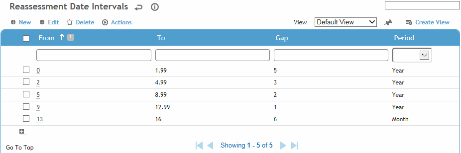
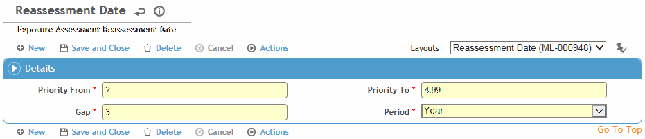

Determines the reassessment date intervals based on the calculated priority for exposure assessments.
To filter the list of records, enter a few characters in one or more of the fields at the top followed by an asterisk, then press Enter.

Click a link to edit, or click New.

For each record, define the priority range and the interval gap from the assessment date on the EAS record. For example:
Priority 0-1.99 = every 5 years
Priority 2-4.99 = every 3 years
Priority 5-8.99 = every 2 years
Priority 9-12.99 = yearly
Priority 12-16 = every 6 months
Click Save.